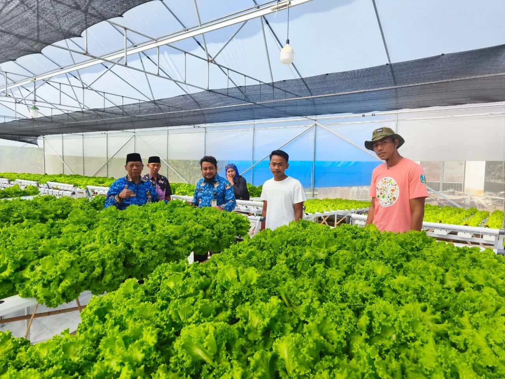

Berawal dari kepedulian terhadap potensi agrikultur lokal, Rama Jaya Farm hadir di Desa Kasengan, Kecamatan Manding, Kabupaten Sumenep. Kami melihat kebutuhan masyarakat akan sayuran segar berkualitas sering harus didatangkan dari luar daerah.
Melalui pemanfaatan teknologi greenhouse dan sistem tanam hidroponik modern, kami membuktikan tanah Madura mampu menghasilkan komoditas premium seperti selada keriting renyah dan melon golden manis secara konsisten.
Desa Kasengan, Kecamatan Manding,
Kabupaten Sumenep, Madura - Jawa Timur
Buka Setiap Hari: 06.00 - 16.00 WIB
Dapatkan selada hidroponik renyah dan melon manis pilihan untuk keluarga atau bisnis kuliner Anda hari ini.